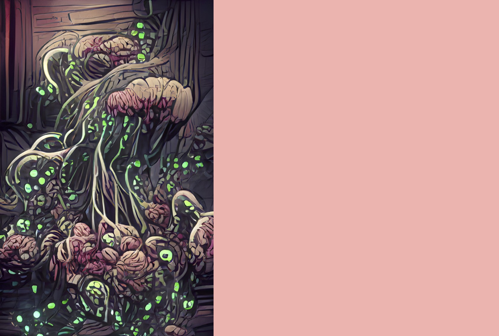

Spores of the Corpse Eater
A spirit that has long lingered in a dormant state beneath the island, in places of dark and damp. All of the plant life on the island is connected through its mycelial network, but only occasionally do its fruiting bodies appear on the surface, in ghostly white rings surrounding fresh corpses. Since the Invaders’ arrival, the Corpse Eater has begun, slowly but surely, to erupt—bringing horror and destruction to the Invaders as its spores grow within them, twisting their minds and bodies.
SETUP:
Put 2 {presence} on your starting board: 1 in the highest-numbered wetland and 1 in land #2.
Play Style:
Adds Disease which can be used to block Builds, and excels at damaging Invaders over time. Feeds on the Invaders’ destruction, gaining Energy when Invaders are destroyed in its lands. Requires patience to begin with, but can build toward an explosive finish with lots of Energy production enabling Major Powers.